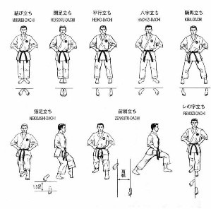

Dachi
Stances

- dachi / tachi
- stance
- kihon dachi
- basic stance
- heisoku dachi
- closed foot stance (feet together)
- musubi dachi
- formal attention stance (heels together, feet at an angle)
- heiko dachi
- parallel stance (feet shoulder width apart)
- hachiji dachi
- natural stance (feet shoulder width apart, toes slightly pointed out)
- shiko dachi
- straddle leg stance
- sanchin dachi
- hourglass stance (back toes in line with front heel)
- han zenkutsu dachi
- half front stance (back knee drops down to front toes)
- zenkutsu dachi
- front stance (back knee drops down to front heel)
- kokutsu dachi
- back stance
- neko ashi dachi
- cat foot stance